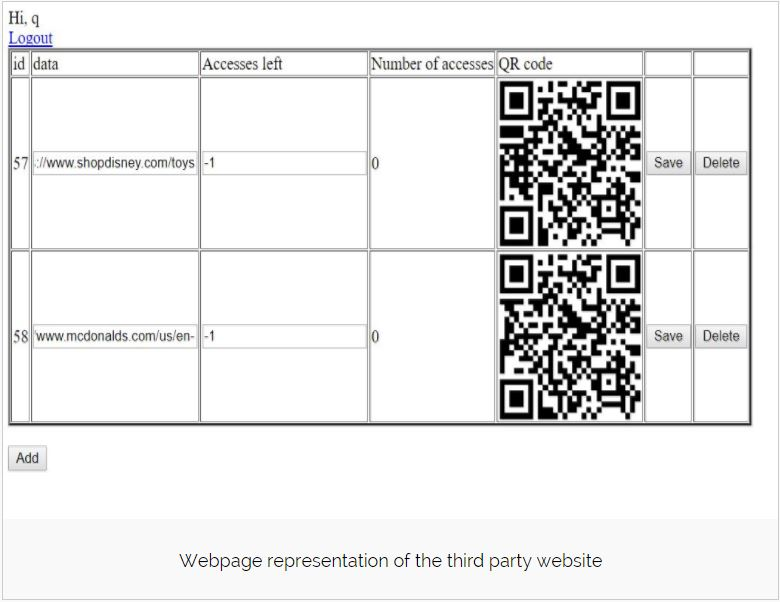
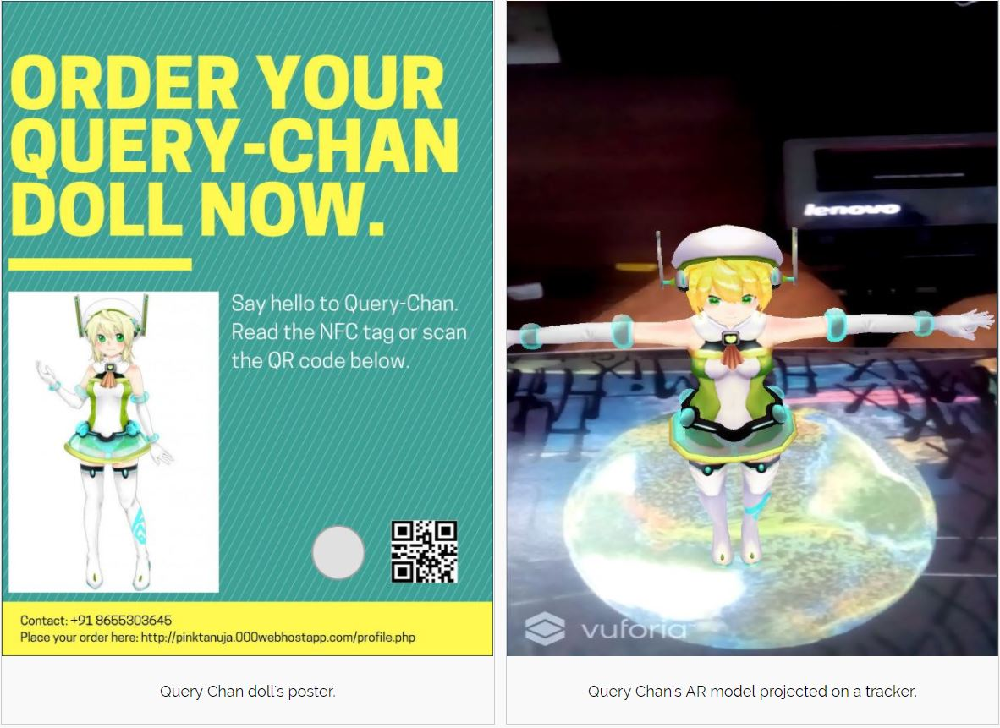

Most advertisement posters today mention links to websites as text or QR codes. This form of passive interaction does not provide enough incentive to the user to visit the mentioned website. A seamlessly integrated, novel Augmented Reality experience can be a motivating factor for the users, also providing more information about the advertised product / service.
Smart Poster is an Android App based on Augmented Reality. With Smart Poster, users can point their phone cameras and see the posters come alive with 3D interactive models. This Android app redirects users to a third-party website via the NFC tag/QR code displayed on it. Interaction introduces another dimension that enables users to get acquainted with the product’s specifics. Companies can keep track of number of visits to their website, or number of AR object accesses, through the third-party website.
Supervisor: Mr Sreejith at BITS Pilani, India
Members: Tanuja Sawant, Vikas Bhatt
Links: Github, Project Write-up
Duration: 21 days
Skills used: Android SDK, Unity, Interfacing
PROCESS
IDEATION
In this phase, I mapped the product's working:After scanning NFC tag/QR code, the application starts the device camera. The 3D model's object file is downloaded from the third-party website database, following which an AR object is seen on a given base image called tracker. For the purpose of code reusability, automation, and database maintenance, a third-party website was created. Every client can host multiple URLs and objects. The QR code for each of these is autogenerated on the third party website. The number of accesses by customers are logged in the database.
PROGRAMMING
Vuforia was used as the AR platform to incorporate a tracker on which the 3D model pops up. Zxing library in Unity was used to scan QR codes. The android app was partly built with Android SDK and partly with Unity.
TESTING
After conducting a study with 10 participants, we found that users were more interested in the advertised product when they used Smart Poster app. Smart Poster can also increase the number of website views for the company.
REFLECTIONS
This project was a great opportunity to explore the applications of Augmented Reality. I learnt to develop interfaces and making them user-friendly. I got to work on Unity and Android Studio which I find helpful to refer back in my work. I learnt to actively be on the lookout for ideas, because many manual tasks can be simplified through HCI.
I learnt a lot from my mentor and other project students, who always had new IOT applications to discuss.